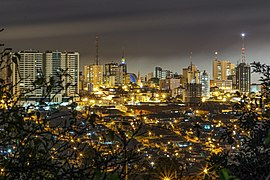

👋 Hello! I am Danilo Mayer, a Collections Supervisor passionate about technology
and innovation. I
work in the financial sector, managing collections teams and ensuring success in the recovery of
funds.
🎓 In addition to my role as a Collections Supervisor, I am focused on an academic journey in
Information Technology. Currently, I am studying Applied Technology at Brigham Young University -
Idaho. Studying Applied Technology gives me a unique perspective on applying technological solutions
to optimize processes and drive efficiency.
🔍 I am always open to connections and collaborations with financial, technology, and academic
professionals. If you share interests in these areas or are interested in discussing collaboration
opportunities, I would be happy to connect.
Parana - Brazil
My home city - Ponta Grossa is a municipality in the state of Paraná, in southern Brazil. It's the fourth most populated city in Paraná, with an estimated population of 355,336. Ponta Grossa is located on a plateau at an elevation of 2,930 feet (893 meters). It's a commercial center that exports goods like maté, timber, soy, corn, tobacco, rice, bananas, and jerked beef through the Atlantic ports of Antonina and Paranaguá. It's also a distribution center for goods from the interior of the state through Curitiba, the capital.